A mobile app that helps parents watch over a child's location and respond fast in an emergency, with a way for strangers to help even if they've never opened the app.
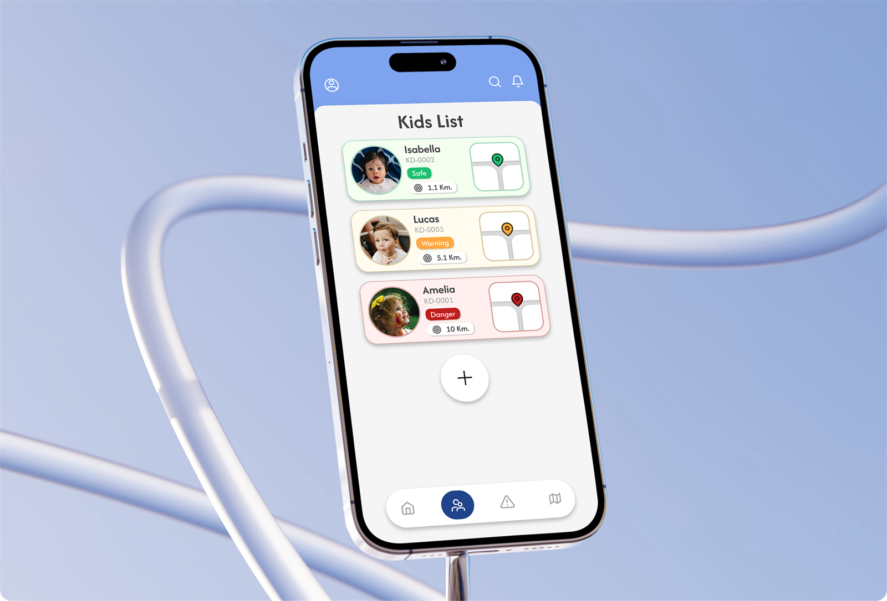
SOS is an application for parents to take care of their children's safety. It gives them a way to check a child's location, including during an emergency. When a child gets lost, well-wishers who aren't part of the SOS system can still help, by contacting the parent through a channel that appears after scanning the child's NFC tag.
Parents have no single place to see where their children are during school hours, and no fast way to raise an alarm when one of them goes missing.
And the people most likely to find a lost child, passersby, shop staff, other parents, have no way to reach the family.
Every child wears an NFC tag that shares a live location, with an emergency signal that calls for immediate help.
Parents can specify and follow a child's location the moment an emergency situation comes up.
Parents can contact a child's tag directly, to communicate with the child in real time.
Announces and informs people nearby, asking for assistance when a child needs to be found.
From sign up and tag registration, through the emergency and rescue paths, to notifications and dark mode, every screen a parent, a child's tag, or a passing well-wisher can reach.
A calm cobalt blue anchors the interface, resting on a light neutral base, with small, deliberate bursts of status color: green for safe, orange for warning, red for danger.
One typeface carries the whole interface, leaning on weight rather than variety to set hierarchy.
The design is based on the word "SOS," which serves as both the concept and the name of the application. The design emphasizes simplicity and gentleness.
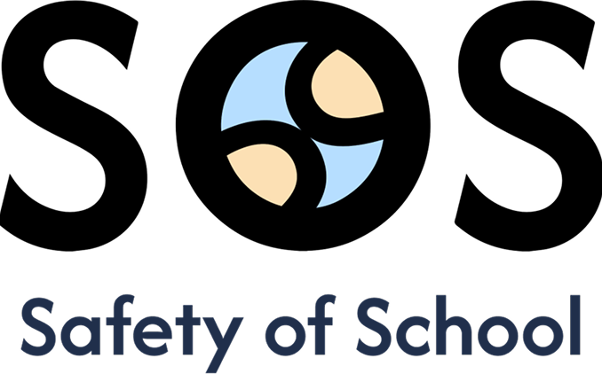
The center of the "O" serving as the most eye-catching focal point. This is achieved by developing the idea of an outstretched hand offering help.
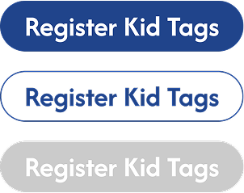
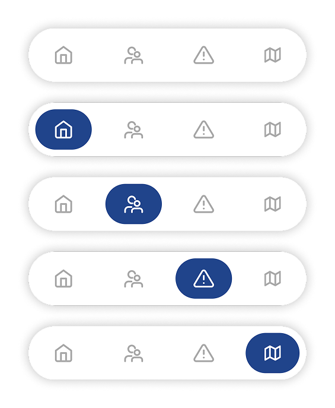
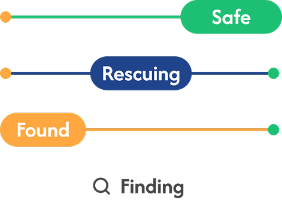
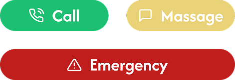
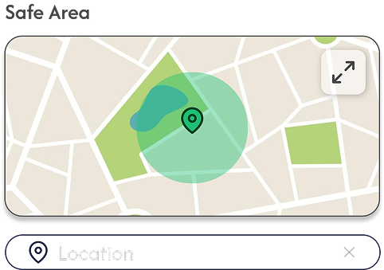
To use the service, a parent signs in, then registers each child: personal details, a safe area on the map, and a safe distance, before the tag connects and starts reporting location.
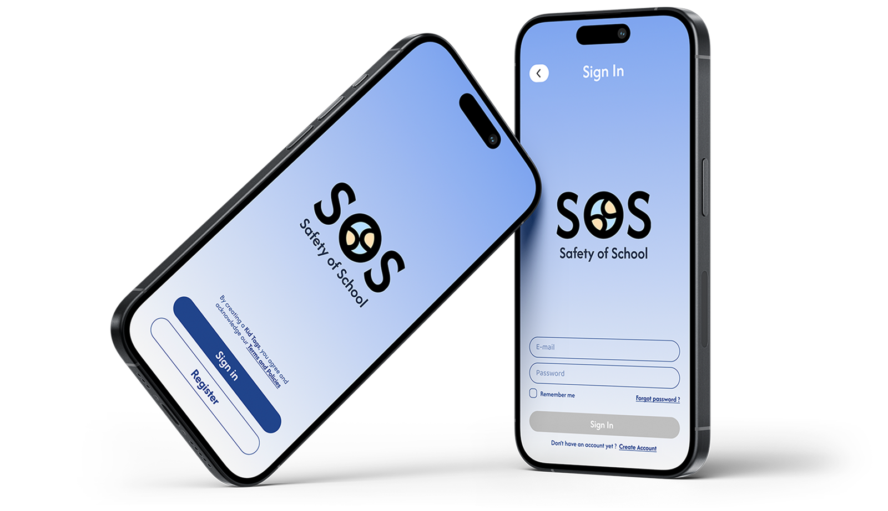
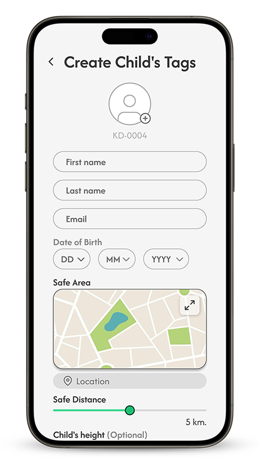
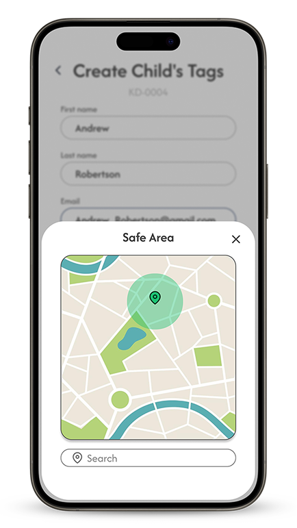
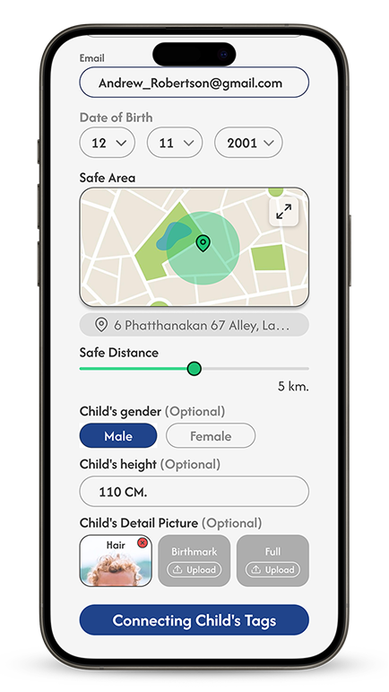
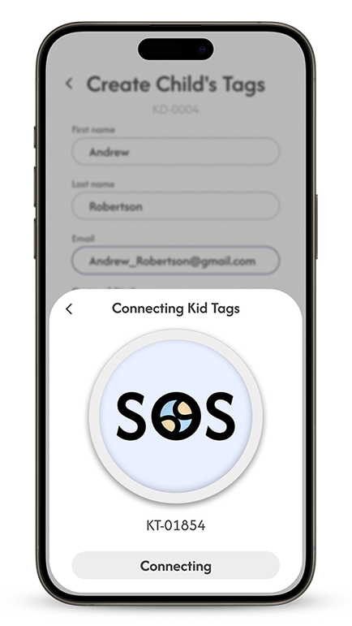
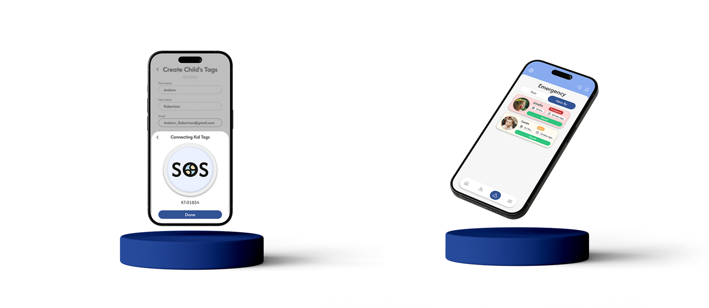
The home feed surfaces every child at a glance. Emergency mode takes over the moment a child needs help, and every detail, location, contact, timing, sits one tap away.
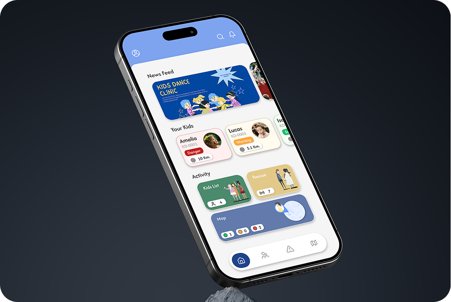
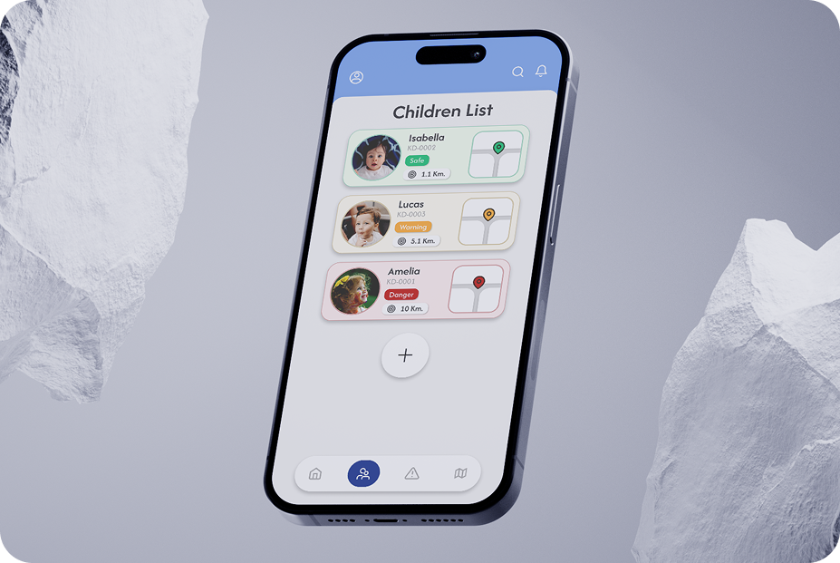
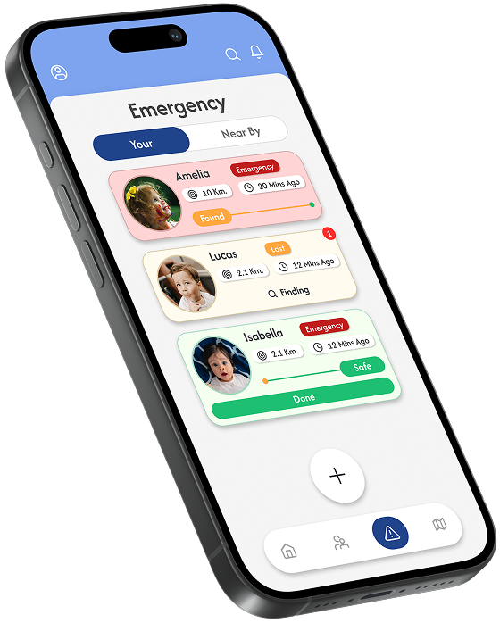
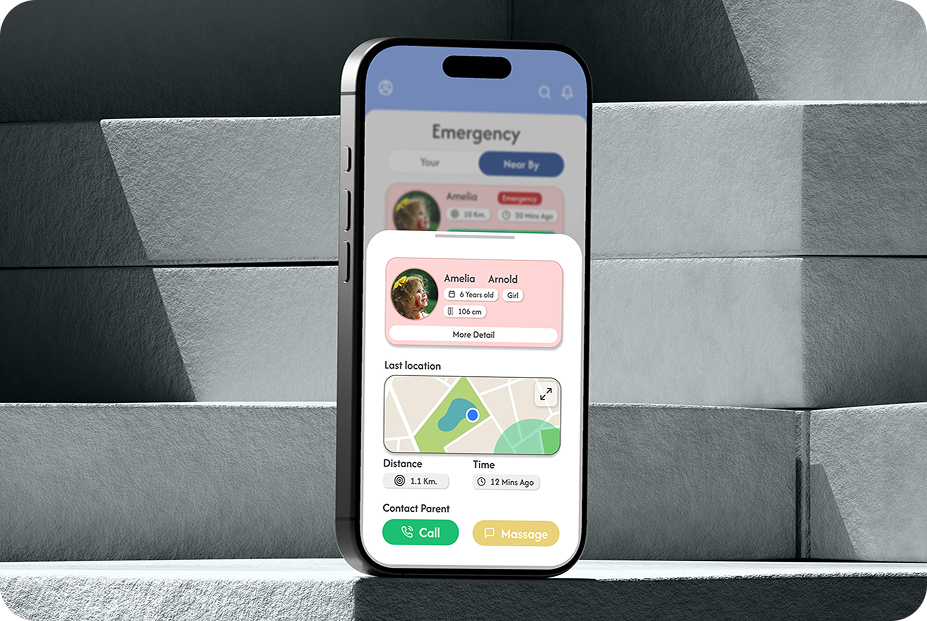
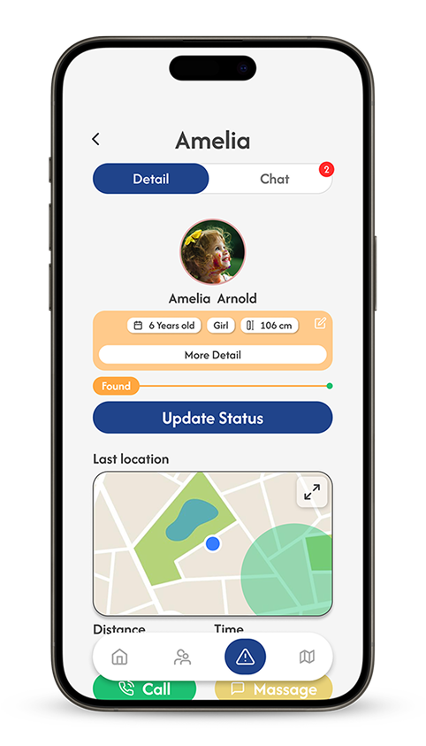
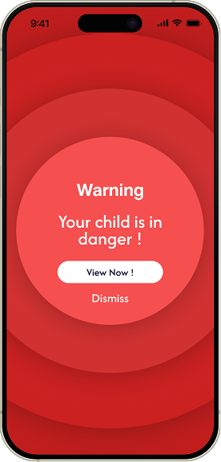
The map monitors every child at once and flags anyone outside their safe zone. Rescue chat opens once a well-wisher reaches out, so parents can coordinate help directly.
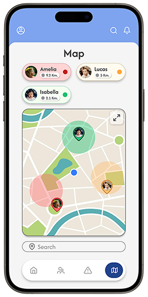
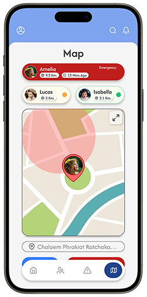
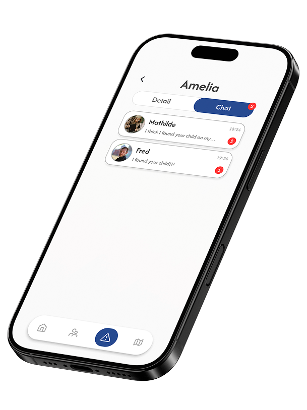
Every status color, card, and map still reads clearly against a dark base, for late nights and long pickup lines.
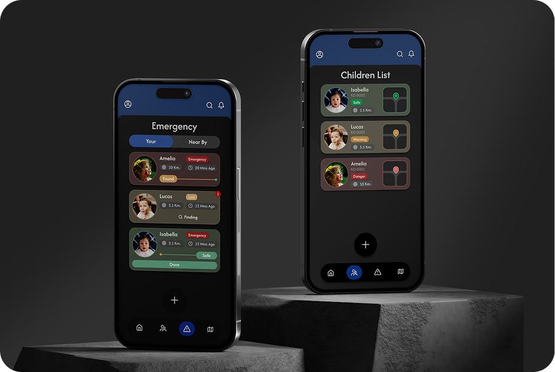
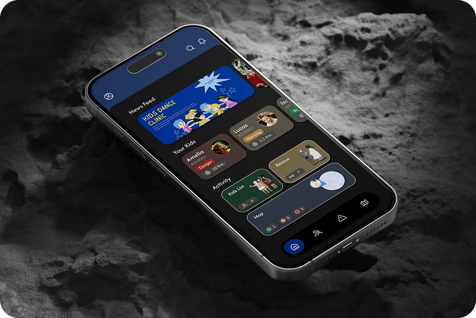
Safe, warning, danger, lost, found, once each state had a single color and a single pill, every screen in the app could be read in a second. Building that status set first made the rest of the UI fall into place.
The person who finds a lost child has never seen this app. Routing them through an NFC scan into a single contact channel kept that path short enough to work without onboarding.
Emergency screens are tempting to make loud. Keeping red reserved for genuine danger, on a soft cobalt and light gray base, let the alarm read clearly without making the everyday app feel anxious.